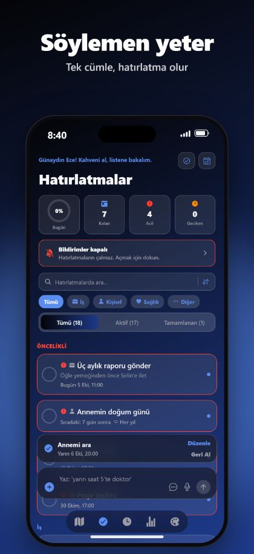
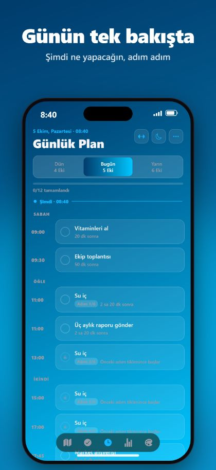
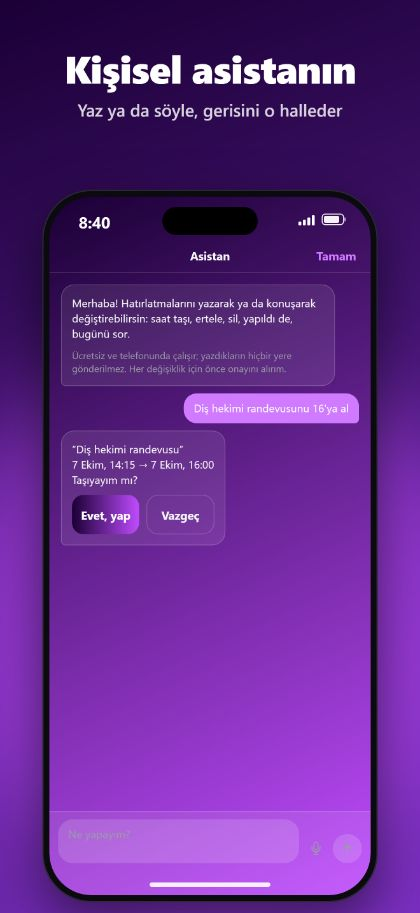

Siri ile eller serbest
“Hey Siri, RemindMe ile hatırlatma ekle” de. Siri günü ve saati sorar, uygulamayı açmadan kaydeder.
RemindMe, yazdığın ya da söylediğin tek bir cümleyi doğru tarih, saat ve tekrarla hatırlatmaya çevirir. Menü yok, form yok.
iPhone ve iPad için ücretsiz. Hesap yok, reklam yok.



Yarın akşam 8’de annemi araAnnemi ara · yarın, 20:00
İlaçlarımı her gün 9’da ve 21’de içİlaçlarımı iç · her gün, 09:00 ve 21:00
Her 2 saatte bir su iç, 9 ile 21 arasıSu iç · her 2 saatte, 09:00–21:00
Yarın sabah 6:30’a alarm kurAlarm · yarın, 06:30
“Hey Siri, RemindMe ile hatırlatma ekle” de. Siri günü ve saati sorar, uygulamayı açmadan kaydeder.
iOS 26’da bir hatırlatma gerçek alarm gibi çalabilir; sessiz modda ya da Odak’ta bile.
Haritada bir yer seç; vardığında ya da ayrıldığında hatırlat, uygulama kapalıyken bile.
Sadece bugün kalanları gösteren günlük plan, takvim, seri ve erteleme.
Hesap yok. Reklam yok. Takip yok. Hatırlatmaların iPhone’unda ve iPad’inde kalır.
Büyük ekranlar için ferah bir düzen, her yön, Split View, widget’lar ve güzel temalar.
RemindMe, iPhone ve iPad için bir hatırlatıcı uygulamasıdır. Tek bir cümle yazarsın ya da söylersin; doğru tarih, saat ve tekrarla hatırlatma oluşturur.
RemindMe ücretsiz indirilir ve reklam içermez.
Hayır. Hesap ve kayıt yok. Hatırlatmaların cihazında kalır.
Evet. “Hey Siri, RemindMe ile hatırlatma ekle” de. Siri günü ve saati sorar, hatırlatmayı uygulamayı açmadan kaydeder. “Ayrıntılı hatırlatma ekle” ve “Konum hatırlatması ekle” de çalışır.
iOS 26 ve üzerinde evet. RemindMe, sessiz modda ya da Odak’ta bile çalan gerçek bir alarm kurabilir.
Türkçe, İngilizce, Fransızca, Almanca ve Arapça; uzun cümleleri ve tek seferde birden fazla hatırlatmayı da.
Evet. Hesap yok, reklam yok, takip yok; hatırlatmaların cihazında kalır.